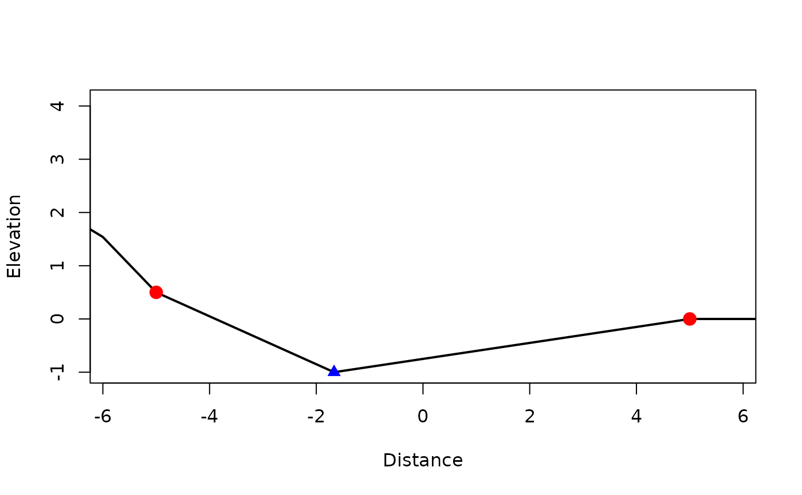
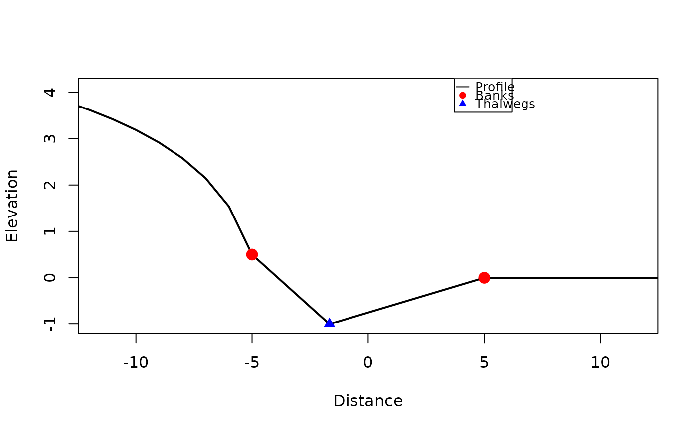
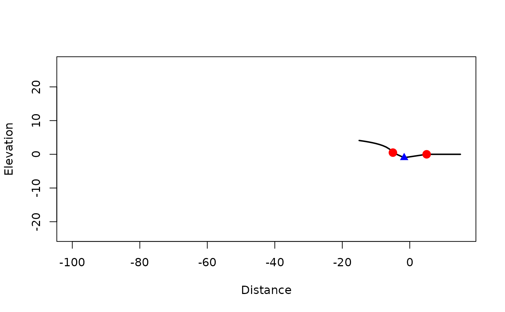
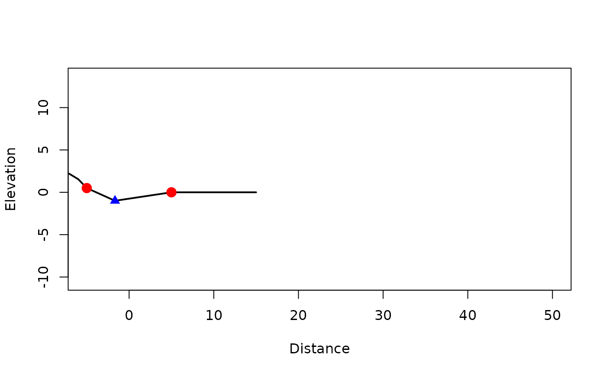

Plot profile cross section
plot.xs_profile.RdPlot a profile cross section showing the elevation profile. This function is primarily for internal use or advanced users. Most users should work with channel objects using plot_plan() or plot_3d().
Arguments
- x
An xs_profile object
- ...
Additional arguments passed to plot
- extent
Selects the default horizontal span:
"banks"uses the span between the outer bank distances;"full"uses the full range of profile sample distances (default"banks").- add
Logical. Add to existing plot?
- exaggerate
Positive numeric. Physical vertical exaggeration: passed as
aspto graphics::plot.default, so one data unit along y is drawn with the same length asexaggeratedata units along x (default1gives true 1:1 scaling on the device). Values above 1 stretch the profile vertically; values between 0 and 1 compress it. Ignored whenadd = TRUE.- from, to
Optional adjustments to that window (distance along the profile). The plotted range starts at
fromwhen given, otherwise at the default left edge forextent; it ends attowhen given, otherwise at the default right edge. You may passfromonly,toonly, both, or neither. Values may lie outside the data range (empty band on that side).
Details
Elevation values are not rescaled; only the plot aspect ratio changes. For
actually modifying stored elevations, use xt_exaggerate_relief().
Finite asp (from exaggerate) is implemented by graphics::plot.window,
which may expand xlim / ylim so the aspect ratio can be satisfied in
the physical plotting region. That is strongest for very large exaggerate;
see ?plot.window (asp). It is not mis-handling of from /
to in this package.
For the horizontal axis, extent fixes the reference span (rng_default).
Each of from and to overrides one endpoint only when supplied; omitted
endpoints use rng_default.
Examples
# Plot a profile cross section (advanced use)
channel <- xt_as_channel(rep(1, 6))
channel <- xt_add_profile(
channel,
distance = distance,
elevation = elevation,
section = id,
banks = is_bank,
data = profile_survey
)
profile_object <- channel[[1]]$profile
plot(profile_object)

# Plot with vertical exaggeration
plot(profile_object, exaggerate = 2)

# Narrow or shift the window relative to `extent`
plot(profile_object, extent = "full", from = -100)

plot(profile_object, extent = "banks", to = 50)
